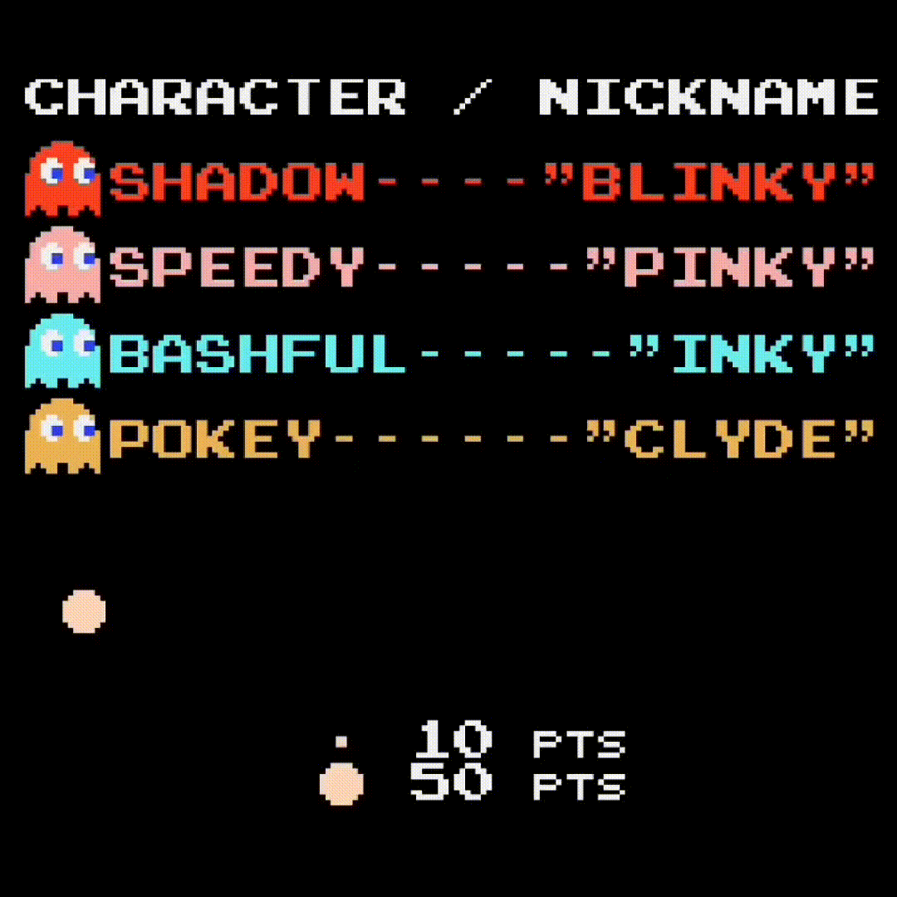

High Score: 0
Player: 0
In this game you'll be playing the pill popping maniac that is Pac-Man. Being Pac-Man means you'll always be on the move!
Use your keyboard arrow keys to change direction. Alternatively click or tap the arrow on the screen.
Included below is a helpful little gif. Have Fun!
